Лабораторная работа №6
Overview
- Дата: 23.04.2026
- Тема: Очистка и трансформация данных. pandas
- Статус: [Completed]
Link
Objective
Освоение методов очистки и трансформации данных с использованием библиотеки pandas на примере реальных данных из Kaggle.
Отчет
Предобработка и анализ данных (Titanic)
1. Введение
Данная лабораторная работа посвящена подготовке данных для машинного обучения на примере классического набора данных пассажиров лайнера Титаник. В ходе работы сырые данные были очищены от шума, дополнены новыми признаками и проанализированы.
2. Цель лабораторной работы
Изучить и применить на практике методы Data Preprocessing: выявление и заполнение пропусков, обработка выбросов, Feature Engineering, кодирование категорий и статистическая агрегация данных.
3. Описание исходного набора данных
В работе использовался датасет, содержащий информацию о пассажирах:
* Survived — целевая переменная (0 - погиб, 1 - выжил)
* Pclass — класс билета (1, 2, 3)
* Sex, Age — пол и возраст
* SibSp, Parch — количество братьев/сестер/супругов и родителей/детей на борту
* Fare — стоимость билета
* Cabin — номер каюты
* Embarked — порт посадки (C, Q, S)
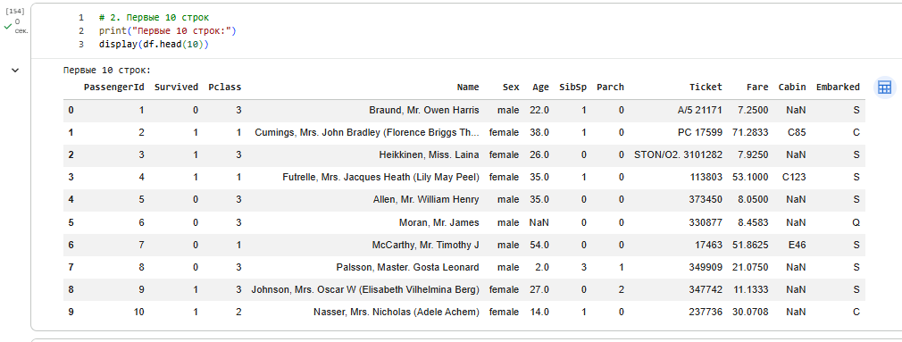
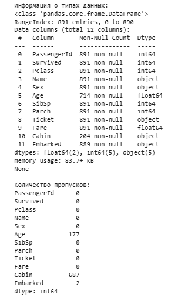
4. Первичный визуальный анализ
На начальном этапе был проведен осмотр данных. Выявлено, что данные неоднородны, содержат текстовые значения и множественные пропуски, препятствующие обучению алгоритмов.
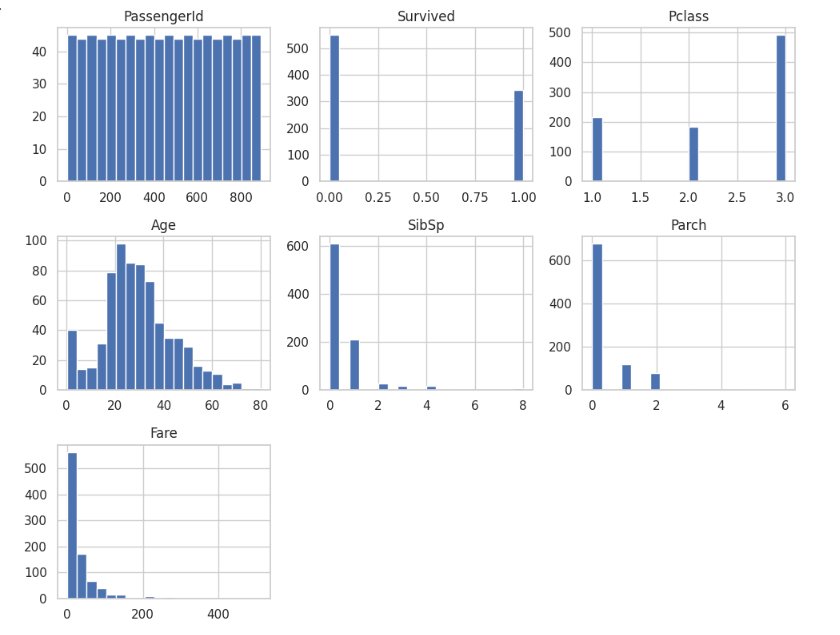
5. Расчет базовых статистик датафрейма
Метод describe() показал:
* Средний возраст до очистки составлял около 29.7 лет.
* Стоимость билета (Fare) имела сильный перекос вправо (максимальное значение 512 при медиане около 14).
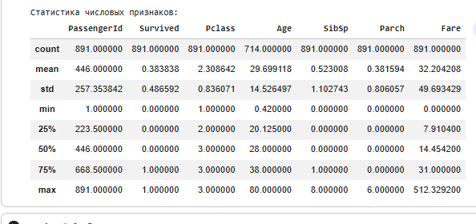
6. Анализ пропущенных значений
Подсчет NaN выявил три проблемные зоны:
* Age — около 20% пропущенных значений.
* Cabin — более 77% пропусков.
* Embarked — 2 пропущенных значения.
7. Стратегия обработки пропусков
- Age: Заполнен медианным значением по всему датасету (28.0 лет).
- Embarked: Заполнен самым часто встречающимся значением (модой) — портом 'S' (Southampton).
8. Удаление неинформативных признаков
Из-за критического объема отсутствующих данных (>75%), столбец Cabin был полностью удален из датафрейма. Это решение позволило избежать искажений в моделях машинного обучения.
9. Анализ выбросов в числовых данных
С помощью графиков Boxplot были выявлены экстремальные значения в признаках возраста и стоимости билетов.
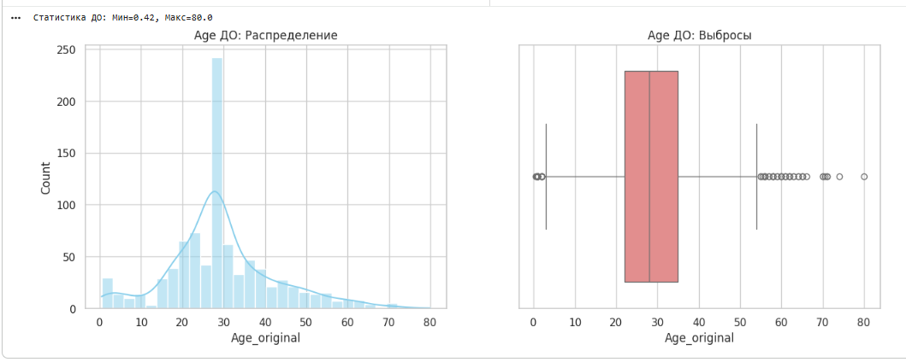
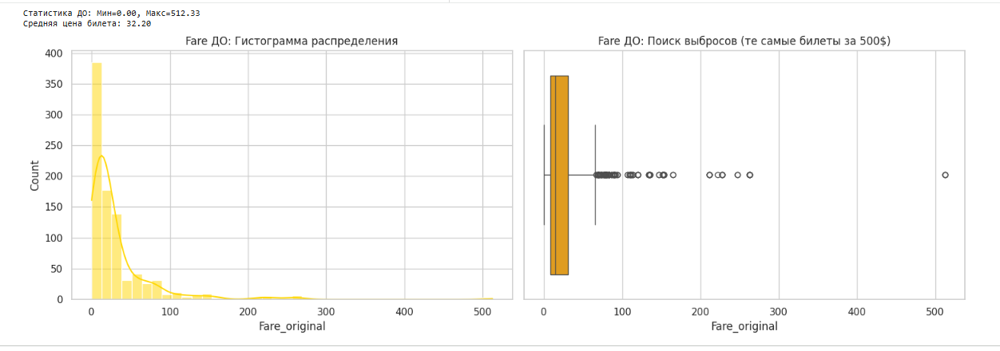
10. Применение винзоризации
Для устранения влияния аномалий была применена винзоризация. Выбросы за пределами 5-го и 95-го перцентилей были заменены на значения соответствующих перцентилей. Это сохранило объем данных, убрав экстремумы.
11. Оценка распределений после трансформации
После винзоризации максимальные значения Age и Fare стали статистически адекватными, перекос распределений существенно уменьшился.
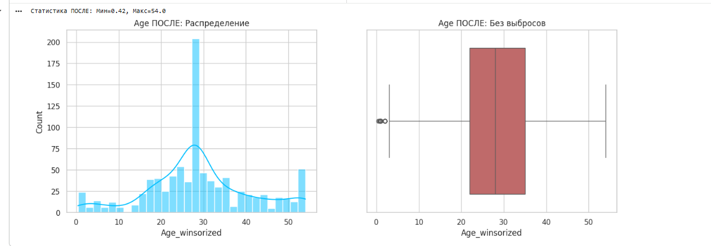
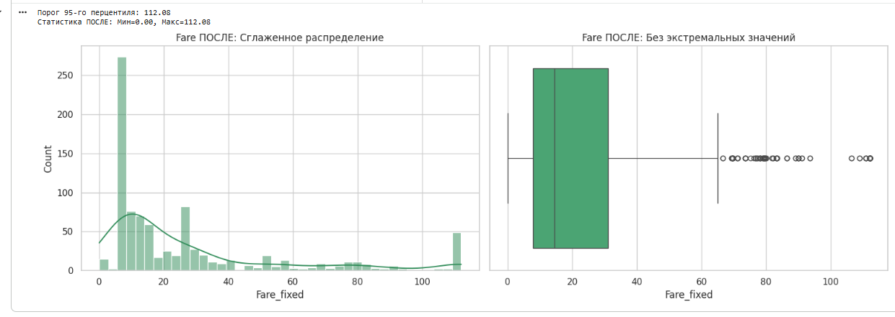
12. Конструирование новых признаков: Title
Из текстового поля Name с помощью регулярных выражений был извлечен титул пассажира (Mr, Mrs, Miss, Master и редкие титулы), что позволило получить скрытый социальный статус.
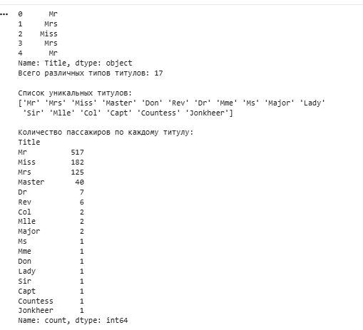
13. Конструирование новых признаков: FamilySize
Создан признак общего размера семьи пассажира по формуле: FamilySize = SibSp + Parch + 1 (сам пассажир).
14. Конструирование новых признаков: IsAlone
На базе FamilySize создан бинарный признак одиночества. Если FamilySize == 1, пассажиру присваивался статус IsAlone = 1, иначе 0.
15. Категоризация признаков: Pclass_cat
Числовой признак класса билета (Pclass: 1, 2, 3) был преобразован в строковую категорию Pclass_cat ('F' - First, 'S' - Second, 'T' - Third) для более наглядной агрегации.
16. Числовое кодирование: Sex
Для последующего расчета матрицы корреляции текстовые значения столбца Sex были закодированы бинарно: male - 0, female - 1.
17. Агрегация данных: Выживаемость по классам и портам
Была рассчитана средняя выживаемость по классам: * F (1 класс): 62.9% * S (2 класс): 47.2% * T (3 класс): 24.2% Медианный возраст по всем портам посадки после заполнения пропусков составил 28 лет.
18. Сводная таблица: Класс и Пол
Анализ показал колоссальный разрыв в выживаемости: * Женщины 1-го класса: 96.8% * Мужчины 3-го класса: 13.5%
19. Оценка влияния размера семьи на выживаемость
Установлено, что одинокие пассажиры выживали реже (30.3%), чем семейные (50.5%). Пик выживаемости (72.4%) приходился на семьи из 4 человек. Огромные семьи (8-11 человек) имели нулевую выживаемость.
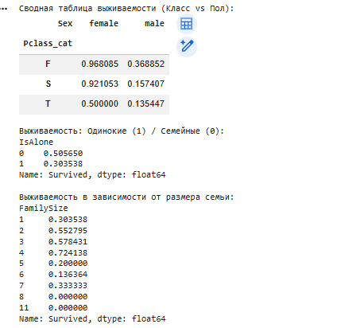
20. Корреляционный анализ признаков
Матрица корреляции подтвердила гипотезы:
* Sex (0.54) — сильнейшая прямая зависимость выживания (преимущество у женщин).
* Pclass (-0.34) — обратная зависимость (чем выше номер класса, тем ниже шансы).
* IsAlone (-0.20) — одиночество снижало шансы на спасение.
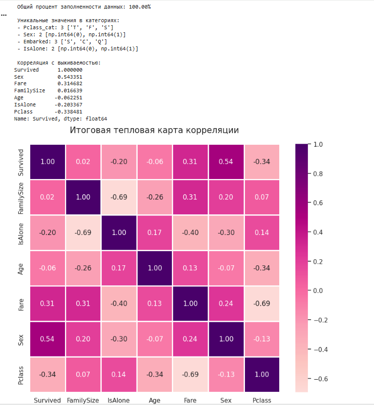
21. Итоговые выводы
- Итоговый датасет содержит 100.00% заполненных данных.
- Проведенная трансформация (винзоризация) и удаление неинформативных признаков (
Cabin) повысили качество датасета. - Новые признаки (
IsAlone,FamilySize) оказались статистически значимыми. - Основными предикторами выживания на Титанике являлись пол и социальный статус (класс пассажира).
- Набор данных
titanic_cleaned.csvполностью готов к подаче на вход алгоритмам машинного обучения.